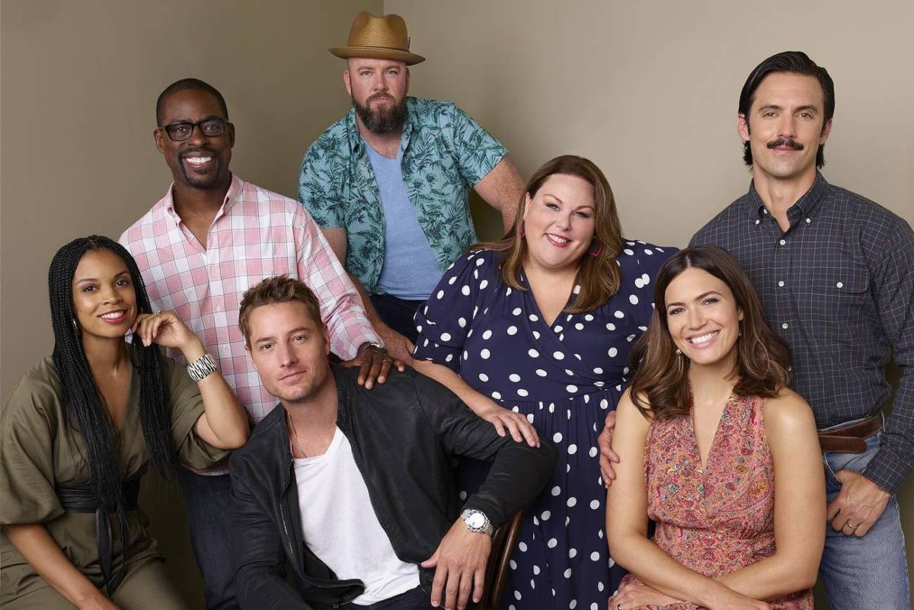
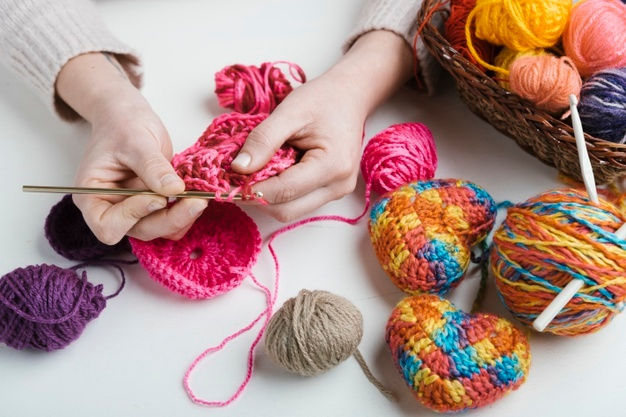
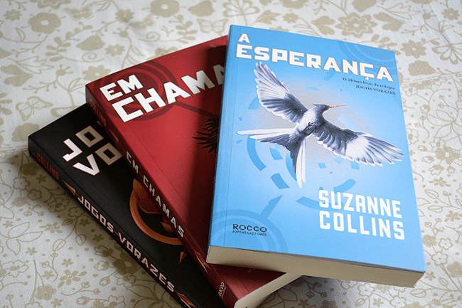
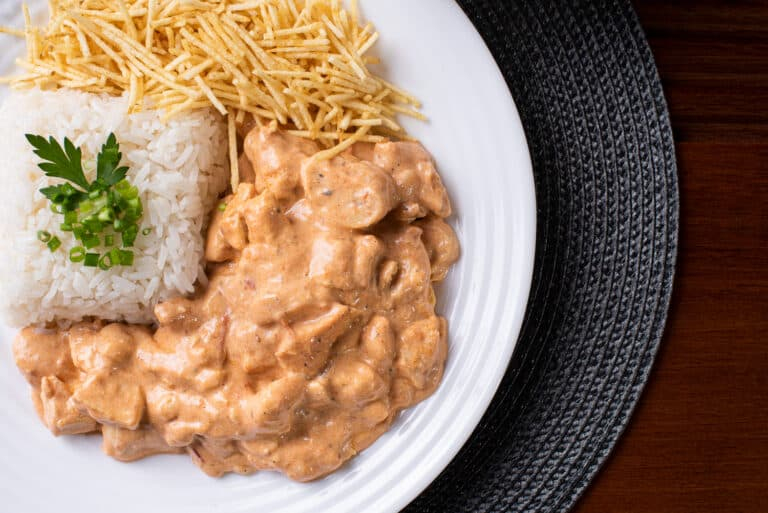

Sobre mim

Olá! Meu nome é Maria Fernanda da Silva, tenho 19 anos e sou estudante de Sistemas para Internet na Fatec de Taquaritinga. Concluí o curso técnico em Informática na ETEC Sylvio de Mattos Carvalho, em Matão, onde desenvolvi uma base sólida em tecnologia, programação e desenvolvimento web. Tenho conhecimentos em desenvolvimento web, principalmente HTML, CSS e JavaScript. Sou uma pessoa proativa, dedicada e detalhista, gosto de trabalhar em equipe e estou sempre aberta a aprender coisas novas.
Minha série favorita
"This Is Us" é uma série emocionante que acompanha a vida da família Pearson ao longo de várias décadas, explorando os altos e baixos que moldam quem eles são. Com uma narrativa não linear, a trama alterna entre passado, presente e futuro, revelando como pequenas decisões e eventos impactam profundamente a trajetória de cada personagem. A série destaca temas universais como amor, perda, identidade e perdão, conquistando o público por sua sensibilidade e profundidade emocional. Com atuações marcantes e roteiros tocantes, "This Is Us" mostra que cada história de vida é única, mas todas compartilham a beleza e a dor de ser humano.
Meu hobby favorito
O crochê é um hobby criativo e relaxante que combina paciência, concentração e expressão artística. Utilizando apenas uma agulha e fios de diferentes cores e texturas, é possível criar peças únicas, como roupas, acessórios e itens de decoração. Além de ser uma forma de terapia, ajudando a aliviar o estresse e a ansiedade, o crochê também estimula a coordenação motora e a criatividade. Muitas pessoas encontram nesse passatempo uma maneira de desconectar do mundo digital e se dedicar a algo manual e gratificante, transformando simples fios em verdadeiras obras de arte feitas com carinho e dedicação.
Meu livro favorito
Os livros e filmes de "Jogos Vorazes" apresentam uma história intensa e cheia de crítica social, ambientada em um futuro distópico onde o país de Panem é dividido entre distritos oprimidos e uma Capital poderosa. Escrita por Suzanne Collins, a trilogia acompanha Katniss Everdeen, uma jovem corajosa que se torna símbolo de resistência após se voluntariar para participar dos jogos — um evento brutal em que jovens lutam até a morte transmitidos como entretenimento. Tanto os livros quanto os filmes conquistaram milhões de fãs ao retratar temas como desigualdade, manipulação política, coragem e esperança diante da opressão.
Minha comida favorita
O strogonoff de frango é um dos pratos mais queridos da culinária brasileira, conhecido por seu sabor cremoso e irresistível. Feito com pedaços de frango refogados e envolvidos em um molho à base de creme de leite, ketchup e mostarda, ele combina simplicidade e muito sabor. Geralmente é servido com arroz branco e batata palha, criando uma mistura perfeita de texturas e temperos. Apesar de ter origem russa, o strogonoff ganhou um toque especial no Brasil, tornando-se presença certa em almoços de família, festas e refeições do dia a dia. É uma comida reconfortante, prática e que agrada a todos os paladares.
Habilidades
HTML
CSS
Javascript
Formações
Ensino Médio Integrado ao Técnico em Informática Para Internet (2021 - 2023)
ETEC Sylvio de Mattos Carvalho - Matão
Sistemas para Internet - Graduação (2024 - Atualmente)
Fatec Taquaritinga - Taquaritinga